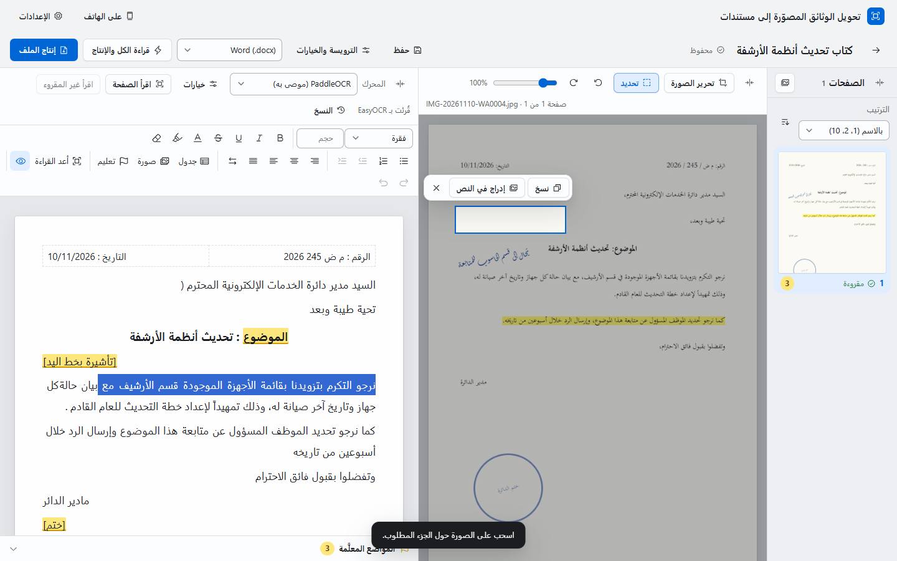

Harf OCR: Turn photographed documents into digital ones
Photograph an Arabic document, check its text beside the photo, and get a Word file on your office letterhead.

Add the photos
The document's pages in order, or a copied picture you paste.
Read them
With a free reader on your computer, or Claude or Google with your key.
Check them
The text sits beside the photo, with every unclear word highlighted.
Make the file
Word or PDF on your office letterhead.
Features

Every line knows where it is on the photo
Click any line of the text to see it on the photo. If a reading looks wrong, read that line again with another reader.

Nothing is guessed
Signatures, stamps and handwriting don't turn into made-up text. Each one stays a highlighted marker in its place, with a note that goes into the final file.
An editor that works like Word
Tables, lists, pictures and paragraph borders, and they all reach the Word file the way you see them.




Review from your phone too
Press On phone in the program, scan the code and type the password. The phone works on the same drafts while the program stays open on the computer, and the link and password are new each time.
Choose who reads the page
On your computer, free
PaddleOCR, Nuqta, Tesseract, EasyOCR
They work offline, so your photos never leave your computer. Nuqta is the most accurate for Arabic, but slower.
AI readers, with your key
Claude, Google Cloud Vision
The page's photo goes to that company with your own key, and the key isn't stored.
Before you download
Is it really free?
Yes. It's open source under the MIT license, and the readers that run on your computer are free. Only Claude and Google Vision need your own key, and you pay them directly.
What does my computer need?
Windows. The installer is about 250 MB and asks whether to add Nuqta and EasyOCR (about 2 GB more, which you can also download later from Settings). Word files always work. PDF, ODT and TXT need Microsoft Word or LibreOffice on the computer.
Windows showed a warning when I installed it
The installer isn't signed yet, so Windows SmartScreen shows a warning. Click More info, then Run anyway.
Does it read English pages?
Yes. It reads Arabic and English pages, and Arabic words inside an English page stay in the right order. The program itself comes in Arabic and English.
Does it work without internet?
Yes. The free readers run on the computer itself, so photos of your documents never leave it. You only need internet for Claude or Google Vision, and for updates.
Does it read handwriting and signatures?
It doesn't guess them. Each piece of handwriting, signature or stamp becomes a highlighted marker in its place in the text, linked to its spot on the photo, so you can type it in or leave it.
How do I update it?
The program checks for a new version when it starts and shows what's new. Click Update and it downloads the new version, installs it and opens again, with your drafts and settings as they were.
Can the whole office use it from a server?
Yes, as a web app with Docker. The steps are on the project's GitHub page.
Try it on a document from your office
Free and open source, under the MIT license.